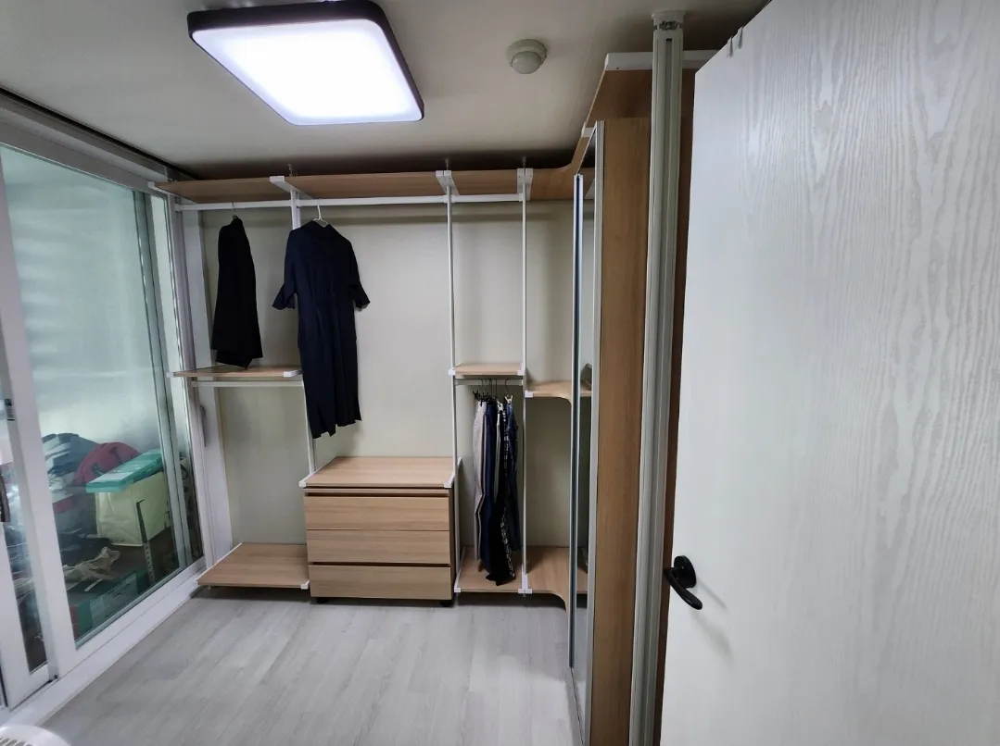

Checklist
이전 전
준비사항
전날 조금만 준비하면 작업이 훨씬 빨라집니다.
이전설치 당일 작업 시간이 늘어나는 흔한 이유는 행거에 옷과 물건이 남아 있거나, 새 공간의 설치할 벽 앞이 비어 있지 않은 경우입니다. 작은 준비로 작업 시간을 줄이고 부품 분실도 막을 수 있습니다.
아래 체크리스트는 방문 전에 확인해 두시면 좋은 내용을 정리한 것입니다. 이사 전날이나 작업 전날 한 번 확인해 주세요.

Situations
시점별로 준비할 것
일주일 전
새 집 치수를 재고 엘리베이터 사용 일정을 확인합니다.
전날
행거의 옷과 선반 위 물건을 모두 비웁니다.
당일 아침
새 공간의 설치할 벽 앞을 비워 둡니다.
작업 후
옷을 다시 걸기 전에 흔들림이 없는지 확인합니다.
Checklist
준비 체크리스트
| 항목 | 할 일 | 이유 |
|---|---|---|
| 옷 | 행거에서 모두 내리기 | 해체를 바로 시작할 수 있습니다 |
| 서랍 | 서랍 안 물건 비우기 | 운반 중 레일 손상을 막습니다 |
| 작은 소품 | 옷걸이·후크·바구니 따로 챙기기 | 분실을 막습니다 |
| 새 공간 | 설치할 벽 앞 비우기 | 바로 설치할 수 있습니다 |
| 엘리베이터·주차 | 예약·정차 위치 확인 | 운반 대기 시간을 줄입니다 |
Process
날짜별 준비 순서
일주일 전
새 공간 치수를 재서 보내주세요.
사흘 전
엘리베이터 사용을 예약합니다.
전날
옷과 서랍을 비웁니다.
당일
설치할 공간을 비워 둡니다.
작업 후
점검을 마친 뒤 옷을 정리합니다.
FAQ
자주 묻는 질문
옷은 어디에 두면 좋나요?
이사 박스나 큰 봉투에 칸별로 담아 두시면 다시 걸 때 편합니다.
옷걸이도 빼야 하나요?
네, 옷걸이도 모두 빼 주세요. 걸린 채로는 옷봉을 분리할 수 없습니다.
행거에 붙인 후크나 바구니는요?
떼어서 따로 담아 두세요. 새 공간에서 다시 달 위치를 정하면 됩니다.
새 집에 먼저 가 있어야 하나요?
설치를 시작할 때 새 배치를 함께 확인하면 좋습니다.
준비를 다 못 했으면요?
도착해서 함께 비우면 되지만 작업 시간이 늘어날 수 있습니다.